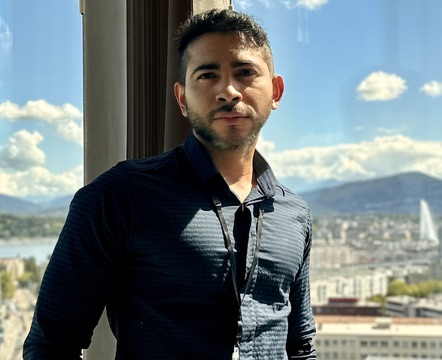

Ivan Morales
Traducteur spécialisé • Professeur de langues
Genève, Suisse · Contact
Profil :
Traducteur passionné et professeur de langues vivantes, je suis une personne assidue, profesionnelle, sérieuse et responsable.
Compétences :
- Traduction de documents techniques et littéraires
- Traduction de documents juridiques, institutionelles, financières et économiques
- Modélisation d'information (XML, Web de données, BD SQL)
- Localisation des sites web, applications, logiciels et jeux vidéos
- Enseignement des langues étrangères : anglais, français et espagnol
- Création d'outils pédagogiques
Expérience professionnelle :
- Traducteur indépendant (2024 - présent)
- Professeur de français et anglais à l'école primaire et sécondaire (2017- 2021)
- Professeur d'espagnol (2021- 2025)
Formation :
- Master en traduction spécialisée, Université de Genève (2021 - 2025)
- Licence en Langues Modernes, Université de San Buenaventura (2012 - 2018)